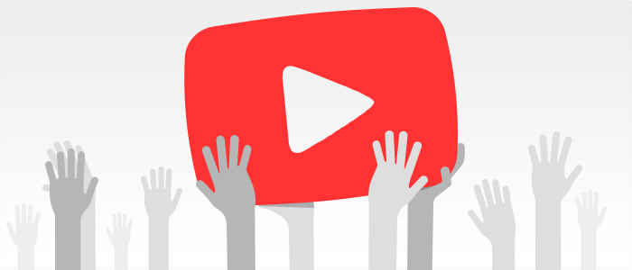

YouTube
Dades:
- YouTube conta amb més de mil milions d'usuaris.
- El numero d'hores de visualitzacions al més a YouTube augmenta un 50% any rere any.
- Es pugen 300 hores de vídeo a YouTube cada minut.
- YouTube està disponible a 75 paísos i traduit a 61 idiomes.
- Els ingressos procedents del dispositius mòbils augmenten mes d'un 100% any rere any.
Funcionament

Per pujar contingut a Youtube has d'estar registrat, però com que el va comprar Google, si tens un compte de Google tens un compte de YouTube. Quan puges un vídeo aquest es queda als servidors de YouTube i tothom, a no ser que ho canviïs el podrà veure.
Els sistema de busca a la plataforma funciona de la següent manera:
Abans el que més contaba i el que feia sortir el teu vídeo entre els més vistos, era la quantitat de visualitzacions que tenia el video, sense importar si et quedaves mirant el vídeo durant 2 segons o 10 minuts.
Ara, YouTube valora més el temps que hi estan el usuaris mirant el vídeo, que no les visites que té, és a dir, si els usuaris es queden 10 minuts mirant el teu vídeo però només té 10.000 visualitzacions davant d'un vídeo que els usuaris només s'hi queden 1 minut, i té 100.000 visualitzacions, es contarà més el primer, ja que els usuaris es queden més temps en aquest. Així eviten que la gent posi miniatures dels vídeos falses i el seu vídeo sigui molt vist, i en canvi un molt bo no sigui tan vist.